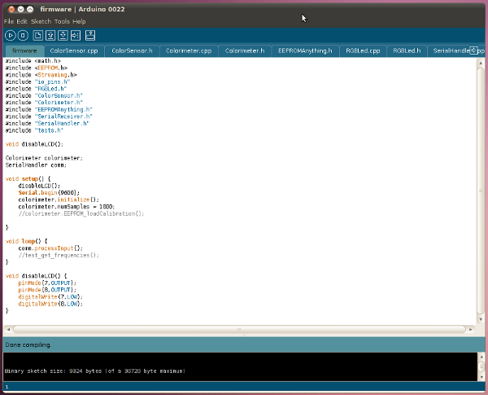

Programming Arduino with colorimeter firmware¶
Note: If you received a pre-programmed Arduino with your colorimeter kit you can skip this step.
- Download the Arduino colorimeter firmware from www.iorodeo.com/software/colorimeter.
- Unzip the downloaded file to a known location. After unzipping, you should see an “colorimeter_firmware” folder containing the different files used by the firmware.
- Connect your Arduino board to the computer, start the Arduino IDE (installation instructions available at: http://arduino.cc/en/Guide/HomePage) and open the main firmware file “firmware.pde”. This file should compile without needing to download additional libraries.
- Select the Arduino Uno board model
- Select the serial port it is using (under “Tools” menu of the Arduino IDE)
- Upload the colorimeter firmware to the Arduino board [1].

Footnotes
| [1] | More detailed instructions for using the Arduino IDE can be found at http://arduino.cc/en/Guide/Environment |